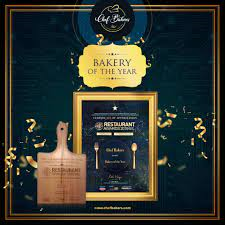
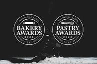

We have been fortunate enough and very honoured to be awarded numerous awards in our short history. Thank you to all our amazing customers and also the judges to have awarded us these awards for our hard work. We look forward to many many more in the future.
|  | Bakery of the year is an annual award given to a bakery that has demonstrated outstanding excellence in the field of baking. The award recognizes the bakery's commitment to quality, innovation, and customer satisfaction. It is a prestigious honor that is highly sought after by bakers and pastry chefs around the world. To be considered for the award, bakeries must demonstrate exceptional skill and expertise in creating baked goods of the highest quality. They must also show a dedication to innovation, constantly exploring new techniques and ingredients to create new and exciting products. Our bakery has its pride in this award. |
The Coupe du Monde de la Boulangerie, also known as the World Bakery Cup, is a biennial international baking competition that takes place in Paris, France. The competition brings together the best bakers from around the world to showcase their skills and compete in a variety of categories. The competition is organized by the CEBPB (Confédération Européenne de la Boulangerie, Pâtisserie, Confiserie), which is the European confederation of bakers, pastry chefs, and confectioners. We are the winners who made Nepal proud |
 |
| The bakery industry is constantly evolving, with bakers and pastry chefs always looking for new and innovative ways to create delicious and visually stunning baked goods. The Bakery Innovation Award is an award that recognizes the achievements of individuals, bakeries, and companies that have made significant contributions to the industry through their innovative and creative approach. W e are so proud to recieve this award. |
We are honest in what we do, we put our heart and soul into baking and creating a picture perfect cake of exquisite taste, just for you. We use only quality baked goods and we will never compromise with any of our ingredients. We strive to work hard each day to exceed customer expectations. we wish to be the number one cake shop in the minds of everywhere.